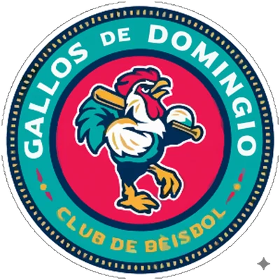

FBL · RP
Heath Bell
- Team
 Santo Domingo Gallos
Santo Domingo Gallos- Position
- RP
- Bats/Throws
- R/R
- Height/Weight
- 6'3", 234 lb
- Born
- Sep 29, 1977 in Oceanside, CA
- Age
- 24
- Uniform
- #12
2002 pitching
| Team | Lg | G | GS | W | L | SV | IP | H | R | ER | BB | K | HR | ERA | WHIP |
|---|
| SDG | FBL | 10 | 0 | 1 | 0 | 1 | 20.1 | 17 | 6 | 6 | 7 | 12 | 0 | 2.66 | 1.18 |
2002 pitching game log
| Date | Opp | Score | | Dec | IP | H | R | ER | BB | K | HR | PC |
|---|
| May 12 | @ MONT | W 7-3 | | S | 2.1 | 1 | 0 | 0 | 0 | 3 | 0 | 30 |
| May 5 | @ EUGL | L 0-4 | | | 1.0 | 1 | 0 | 0 | 0 | 0 | 0 | 11 |
| May 3 | vs SACR | L 3-5 | | | 1.1 | 0 | 0 | 0 | 0 | 0 | 0 | 12 |
| May 1 | vs SACR | W 5-1 | | | 2.2 | 2 | 0 | 0 | 3 | 1 | 0 | 37 |
| Apr 26 | vs ALSK | L 1-8 | | | 2.1 | 4 | 3 | 3 | 1 | 0 | 0 | 33 |
| Apr 22 | @ MePh | L 2-7 | | | 3.0 | 4 | 2 | 2 | 0 | 2 | 0 | 41 |
| Apr 18 | vs SARe | W 4-2 | | H | 1.2 | 1 | 0 | 0 | 0 | 1 | 0 | 23 |
| Apr 13 | vs HYG | W 14-5 | | H | 2.1 | 2 | 1 | 1 | 0 | 3 | 0 | 34 |
| Apr 9 | @ OKC | L 2-4 | | | 1.1 | 1 | 0 | 0 | 2 | 1 | 0 | 35 |
| Apr 4 | @ VANC | W 4-3 | | W | 2.1 | 1 | 0 | 0 | 1 | 1 | 0 | 34 |
Career batting (as a pitcher)
| Year | Team | Lvl | G | PA | AB | R | H | 2B | 3B | HR | RBI | BB | K | SB | AVG | OBP | SLG | OPS | WAR |
|---|
| 2001 | ANC | AA | 43 | 1 | 1 | 0 | 0 | 0 | 0 | 0 | 0 | 0 | 1 | 0 | .000 | .000 | .000 | .000 | -0.0 |
Career pitching
| Year | Team | Lvl | G | GS | W | L | SV | IP | H | R | ER | BB | K | HR | ERA | WHIP | WAR |
|---|
| 1998 | T | Rookie | 22 | 0 | 1 | 0 | 8 | 46.0 | 40 | 15 | 13 | 11 | 61 | 5 | 2.54 | 1.11 | 0.9 |
| 1999 | HYG | A | 55 | 0 | 1 | 7 | 25 | 62.0 | 47 | 23 | 18 | 17 | 68 | 3 | 2.61 | 1.03 | 1.5 |
| 2000 | WCB | A | 48 | 0 | 5 | 1 | 23 | 60.0 | 43 | 19 | 17 | 21 | 75 | 4 | 2.55 | 1.07 | 1.3 |
| 2001 | ANC | AA | 43 | 0 | 3 | 1 | 4 | 61.0 | 82 | 44 | 41 | 19 | 55 | 13 | 6.05 | 1.66 | -0.7 |
| 2002 | SDG | FBL | 10 | 0 | 1 | 0 | 1 | 20.1 | 17 | 6 | 6 | 7 | 12 | 0 | 2.66 | 1.18 | 0.4 |
| Top level | | | 10 | 0 | 1 | 0 | 1 | 20.1 | 17 | 6 | 6 | 7 | 12 | 0 | 2.66 | 1.18 | 0.4 |
Seasons before 2002 are the player's real-life record, listed under the franchise that holds that history in this universe. "Top level" totals count major-league-level seasons only.